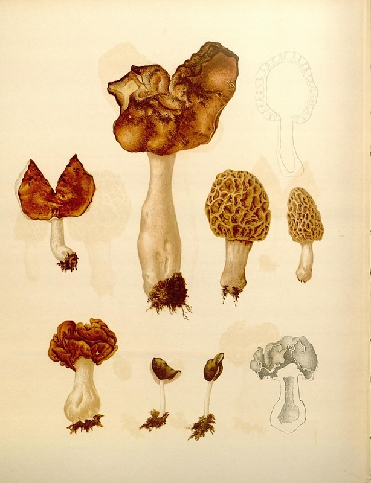

These wellness classes are taught in partnership with The Well — Integrative Medicine, a Sacramento integrative-medicine clinic, blending clinical care with traditional practice.
Engaging, approachable classes with Serena Ling, PA-C — grounded in both modern medical evidence and centuries of traditional herbal knowledge. Browse the calendar and reserve your seat.
Select a class on the calendar to jump to its full description below. To book a seat or ask about a private session, get in touch.
The offerings
Class details

01
Understanding Medicinal Mushrooms
Wed, Jul 8 · 6:00 PM
Whether you're curious about brain health, immunity, stress, athletic performance, cancer support, or longevity, you'll leave understanding which mushrooms may be appropriate for different goals — and how to avoid wasting money on ineffective products.
Walking into a supplement store can be overwhelming. Learn to thoughtfully build an evidence-informed home apothecary using herbs, medicinal mushrooms, vitamins, minerals, teas, tinctures, and simple natural remedies — a practical, budget-friendly toolkit filled with remedies you understand and trust.
Topics include: essential household herbs; mushrooms for immunity, stress, sleep, cognition & recovery; vitamins & minerals worth taking; safe supplement combinations & interactions; natural approaches for seasonal illness, digestion, headaches, anxiety, sleep, wound care & immune health; reading labels & spotting quality manufacturers; personalized family protocols; and when to seek medical care.
Learn how gut health influences immunity, inflammation, mood, hormones, and overall wellness. Covers the microbiome, digestion, probiotics, prebiotics, medicinal mushrooms for gut support, and nutrition strategies for a resilient digestive system — plus safe, effective supplement approaches and how to build a personalized routine without overwhelm. Leave with clear, usable tools for digestion, energy, mood, and long-term resilience.
A practical look at supporting attention, recall, and mental stamina through nootropic mushrooms, adaptogenic herbs, sleep, and lifestyle — and how to tell evidence-informed approaches from hype.
Waldorf for Adults: Creative Rhythm & Restorative Art Practice
Biweekly · Sat Jul 11 & Jul 25 · 10:00 AM
A biweekly experiential class bringing the foundational arts of Waldorf education into an adult setting as gentle art therapy and nervous-system regulation within an integrative wellness framework. Join for one class or the 10-session series — each is unique while building on the last.
Work with lyre music to attune attention, anthroposophical watercolor to explore mood and inner landscape, form drawing to organize perception, and eurythmy-inspired movement to reconnect breath, gesture, and spatial awareness. Process over product; a relaxed, non-performance space. Taught by Serena, who attended Waldorf school and is a Waldorf parent.
Give-back class: 25% of your class fee is donated to the Waldorf school.
2 hours · biweekly · one class or 10-session seriesSign up · $40
Pricing & passes
Class pricing
Every class runs 2 hours and is the same price — drop in for one, or save with a multi-class pass. Community members get one free class each month, plus 10% off additional classes.
Drop-in
Any 2-hour class
Single class$40
Student / senior$35
Bring a friend (2 people)$70
All offerings — mushrooms, apothecary, gut health, focus & memory, and Waldorf — are 2-hour classes at the same price.
Best value
Class passes
5-class pass$180$36/class
10-class pass$340$34/class
Passes never expire and can be shared with a partner in the same household.
Give back
Waldorf for Adults
$402-hour class
25% of your class fee is donated to the Waldorf school. Same price as every class — a portion simply gives back.
Serena Ling, PA-C is a board-certified Physician Assistant with a unique background that bridges conventional medicine and traditional healing practices. Her clinical experience includes oncology, surgery, family medicine, emergency medicine, and clinical research, alongside years of study in herbalism, Tibetan medicine, nutrition, and medicinal mushrooms.
She is the founder of Living Terrain, where she formulates clinician-created botanical extracts using carefully sourced mushrooms, synergistic herbs, and evidence-informed extraction methods. Her passion is translating both scientific research and traditional wisdom into practical tools that empower people to improve their health safely and confidently. Her classes are engaging, approachable, and grounded in both modern medical evidence and centuries of traditional herbal knowledge.